凤 纹
鸟纹包括凤纹、鸱枭纹、鸾纹及成群排列的雁纹等。鸟长翎垂尾或长尾上卷，作前视或回首状。在青铜器上大多作对称排列。凤鸟纹按照构图形象分为长喙鸟纹，体躯是鸟，头部有一较长的喙；鸱枭纹，正面，大圆眼，毛角大翅，盛行於商代中晚期；雁纹，是鸟纹中写实的形象，属春秋晚期北方的风格。 凤纹，在古代的传说中，为群鸟之长，是羽虫中最美者，飞时百鸟随之，尊为百鸟之王。在古人的心中，凤是吉祥之鸟。《说文》四云：“凤，神鸟也。天老曰：‘凤之象也，鸿前麐后，蛇颈鱼尾，颧颡鸳思，龙文龟背，燕颌鸡喙，五色备举。出于东方君子之国，翱翔四海之外，过昆仑，饮砥朴，濯羽弱水，莫宿风穴，见则天下安宁’。”